The Arctic is warming
The Arctic is warming about four times faster than the rest of the world. This is due to a combination of factors – sea ice loss, changes in atmospheric and ocean circulation, and increases in cloud cover and water vapour. Climate change and its impacts are particularly pronounced in the Arctic.
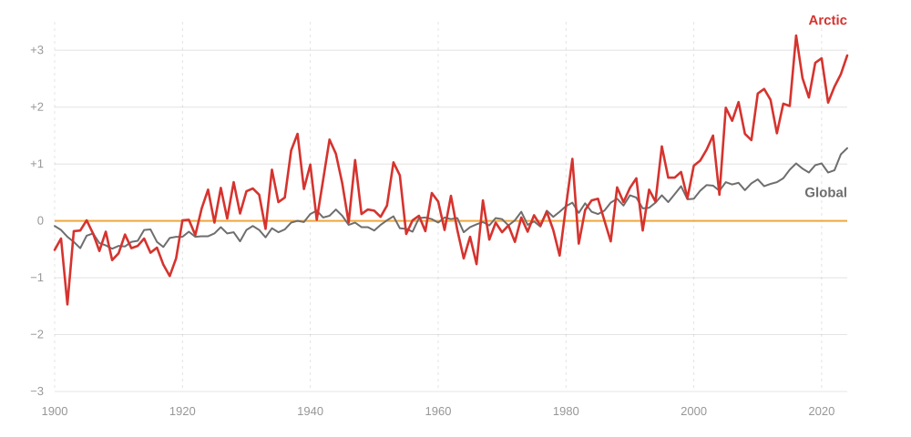
Sea ice is melting
Sea ice in the Arctic Ocean is a key component of the Arctic climate and acts as Earth’s “natural refrigerator”. Its high albedo allows it to reflect most of the Sun’s energy back into space.
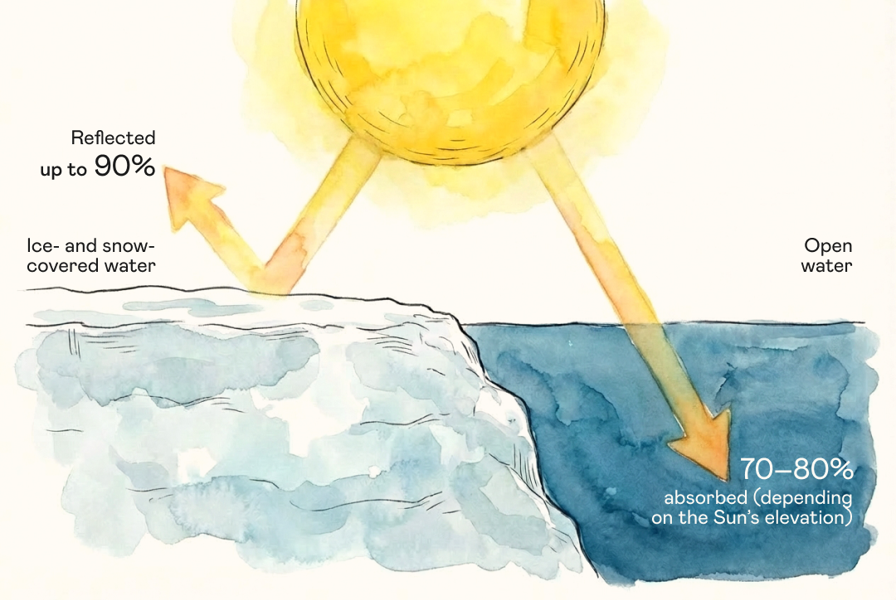
Dark ocean water has a much lower albedo than ice, so it absorbs more solar energy than it reflects. As a result, ocean temperatures rise and even more ice melts. This creates a positive ice–albedo feedback that accelerates warming.
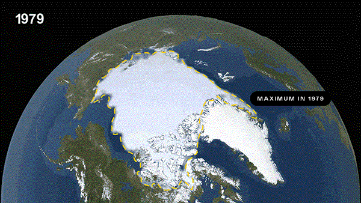
Satellite observations since 1979 show that sea ice extent has been steadily declining by about 13% per decade. The lowest summer extent was recorded in September 2012.
According to projections by the Intergovernmental Panel on Climate Change, the Arctic could become temporarily ice-free during the warm season as early as the middle of the 21st century. The consequences for local ecosystems would be catastrophic.
Ocean currents and wind patterns are changing
If all Arctic sea ice becomes seasonal rather than perennial, temperatures will rise even further. Atmospheric and ocean circulation patterns are also changing. Temperatures in the Northern Hemisphere will rise further. Greenland’s glaciers and Arctic Ocean sea ice will continue to melt, making the surface waters of the northern Atlantic Ocean fresher.
This will slow deep-ocean circulation in the region. As a result, the entire global ocean conveyor belt of currents could be disrupted.
This could alter the climate in different parts of the world: some regions could become colder, while others could experience changes in precipitation and the frequency of extreme weather events.
Temperatures in the Northern Hemisphere rise further
Greenland’s glaciers and Arctic Ocean sea ice continue to melt
As a result, the surface waters of the northern Atlantic Ocean become fresher
Fresh water is less dense than salt water, so it does not sink as readily to greater depths. This will slow deep-ocean circulation in the region
If this happens, the entire global ocean conveyor belt of currents could be disrupted
Glaciers and permafrost are thawing
Sea ice is not the only thing thawing rapidly in the Arctic – permafrost is thawing too. It used to be known in Russian as “eternal frost”, but today specialists increasingly use the more precise term “perennially frozen ground”. Such ground can remain frozen for decades or centuries, but it is not frozen forever and can thaw as temperatures rise. Around 4 million people live in the permafrost zone. Another 10 million live in regions where infrastructure relies on the stability of frozen ground. Around 70% of infrastructure assets – buildings, roads, and pipelines – depends on the ground remaining frozen. When it thaws, the ground can literally collapse.
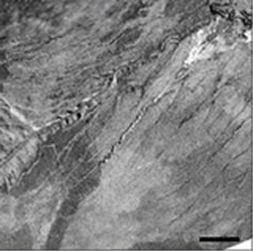
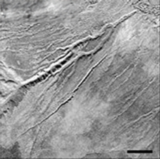
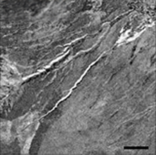
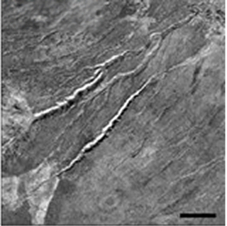
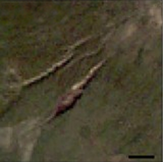
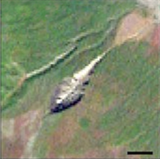
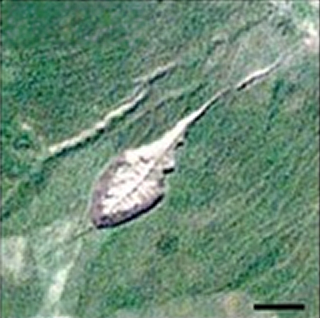
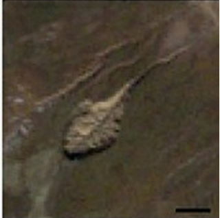
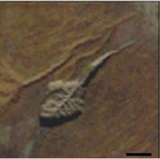
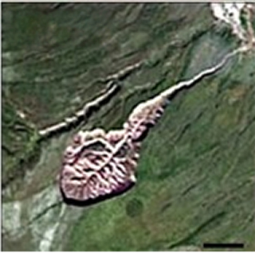
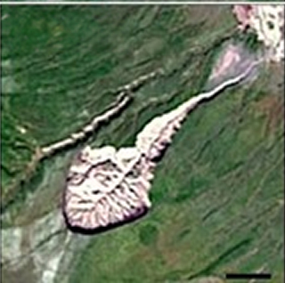
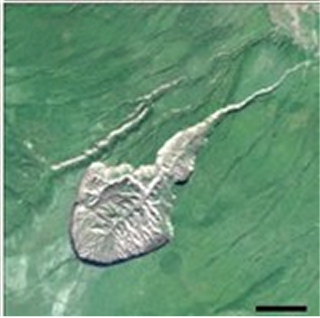
The Batagaika crater is the world’s largest permafrost crater. It is a growing depression 1 km long and up to 100 m deep. Located in Yakutia, the crater began forming in the 1960s.
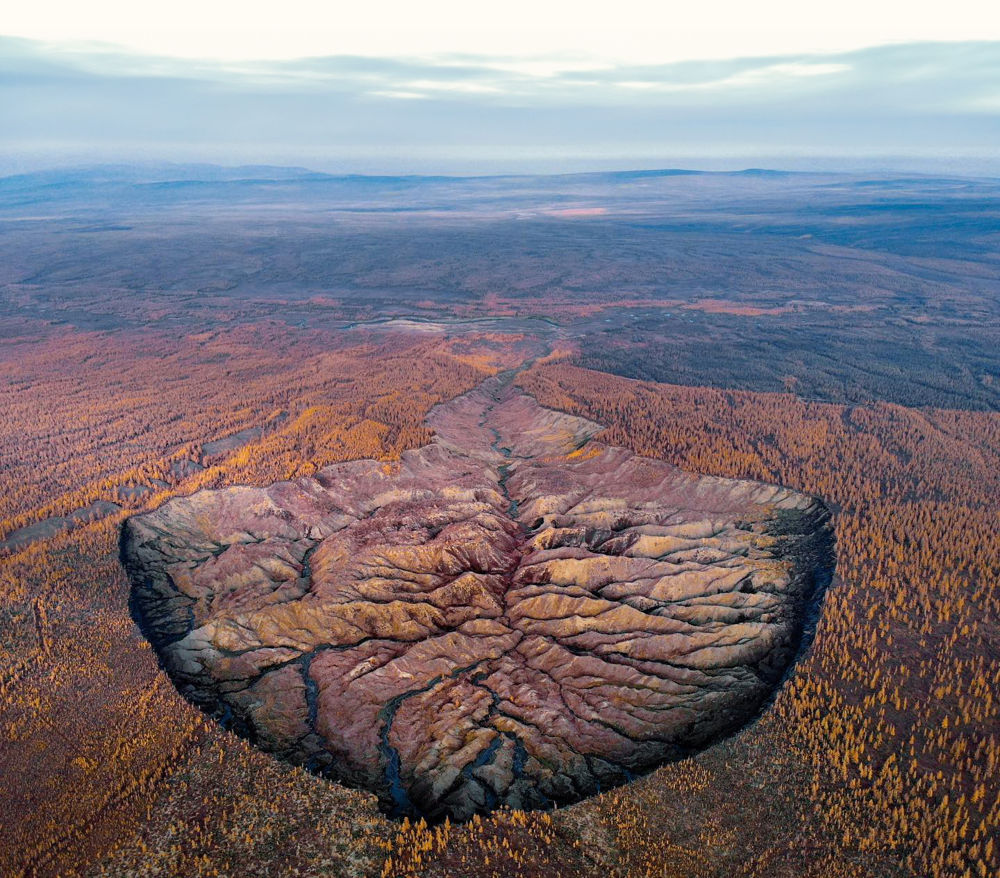
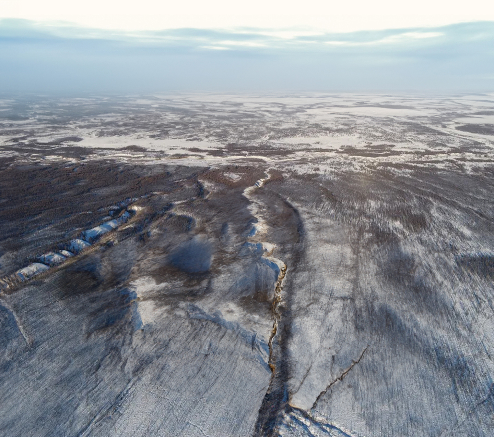
Reconstruction of what the area looked like in the mid-20th century (left) and the crater today (right)
Water resources and food security are at risk
Rising temperatures are disrupting precipitation patterns and the planet’s entire water cycle.
Floods and droughts are becoming more severe. Higher global temperatures increase the amount of moisture the atmosphere can hold. On the one hand, this leads to more intense but less frequent extreme rainfall; on the other, it contributes to severe droughts as more water evaporates from the land surface. Changes in atmospheric circulation also contribute to these effects. Projections suggest that the risks of drought and flooding will continue to increase with every degree of global warming.
Available freshwater resources are declining. Floods and droughts increase water pollution from sediment, pathogens, and pesticides. Sea-level rise will cause groundwater to become more saline. Fresh water will become less accessible to people and ecosystems in coastal areas. Together, these changes lead to growing water scarcity around the world and an increase in natural disasters.
Crop yields are declining. Soil quality is deteriorating, soils are becoming more saline, crop pests are expanding their ranges, and droughts are becoming more severe in some regions. All of this reduces crop yields, and scientists project that losses could become even greater as temperatures continue to rise.
Ecosystems are being degraded, and biodiversity is declining
Human activity has a major impact on biodiversity, primarily through the use of land for agriculture. More than 70% of the world’s ice-free land has already been altered by such activities.
Climate change is now having an increasing impact on nature. It alters plant and animal habitats, forces species to migrate to cooler areas, damages ecosystems such as coral reefs, and increases the frequency of extreme weather events.
It is important to remember that the relationship between climate and biodiversity works both ways. Climate affects nature, while healthy ecosystems help mitigate climate change. Forests, grasslands, and wetlands absorb carbon dioxide and reduce the damage caused by extreme weather. Protecting and restoring natural ecosystems and their biodiversity is therefore an important way to tackle climate change.
As the climate changes, so does life for all of humanity
The economy is increasingly affected by extreme weather events – hurricanes, floods, droughts, and cyclones. They threaten people, animals, and plants and cause serious economic damage in countries around the world. International organisations consider global warming one of the major economic risks of this decade.
The vulnerability of countries and regions to extreme weather events depends on climatic, social, economic, and geographical factors.
How climate change affects human health
Higher mortality in large cities due to heatwaves. According to the Russian Federal Service for Hydrometeorology and Environmental Monitoring (Rosgidromet), Russia is warming at an average rate of 0.45 °C per decade – 2.5–2.8 times faster than the rest of the world. This is leading to more frequent periods of extreme heat in megacities, causing sharp increases in mortality from cardiovascular and respiratory diseases. For example, during the 2010 heatwave, mortality from strokes among people over 65 in cities with a distinctly continental climate increased by 49%, while mortality from hypertension rose by 84% (source).
Worsening allergies and the spread of infections. In Russia, milder winters and shifting seasonal patterns are increasing the risk of tick-borne infections, such as Lyme disease. In addition, warming and rising CO₂ concentrations are extending the flowering season and increasing pollen levels, making life more difficult for people with allergies and increasing the risk of asthma.
Health risks for children and newborns. Extreme temperatures can adversely affect pregnancy – heat increases the risk of preterm birth by 5% for every 1 °C rise in temperature and by up to 16% during extreme heatwaves (source). Today, deaths from cold still significantly outnumber deaths from heat in most countries, including Russia. However, global warming will inevitably increase the risks associated with extreme summer heatwaves.
Climate tipping points
It may seem that climate-related risks are increasing slowly and that we will have enough time to adapt. However, change can also happen much more rapidly. A climate tipping point is a theoretical critical threshold at which the global or regional climate shifts from one stable state to another. Such a shift may be irreversible.
How to prepare for climate change and protect nature and the economy
Climate change gives rise to climate risks – potentially harmful consequences for nature, society, and the economy. These risks fall into two categories: physical risks arising from the direct impacts of natural disasters such as hurricanes, floods, and wildfires, and transition risks arising from the transformation of the economy to reduce greenhouse gas emissions. Transition risks include new legislation, market changes, and the adoption of new technologies.
Climate risks need to be carefully assessed to identify the best solutions and reduce threats. The ideal solution would be to eliminate our impact on the climate system altogether through mitigation. This would slow warming and, in the best-case scenario, could even stop it.
However, climate change is already happening, so mitigation alone will not be enough, particularly without ambitious climate action at the national or international level. We will have to adapt to the current and future impacts of climate change.
Climate adaptation means adjusting environmental, social, and economic systems to cope with actual or expected changes and their impacts. Approaches to adaptation vary depending on the country, region, or organisation – there is no one-size-fits-all solution.
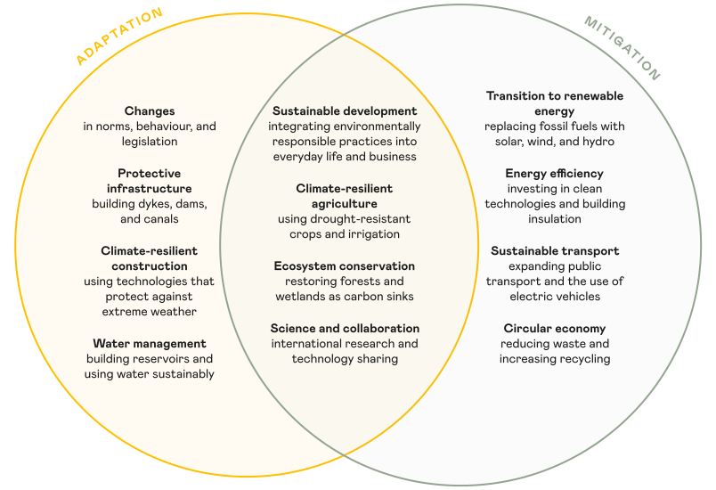
Both mitigation and adaptation are therefore essential. Mitigation can help avoid the highest levels of risk, while adaptation can help us cope with moderate levels of risk.
In the next chapter, you will learn how climate change affects the economy, what a carbon footprint is, and why the world is talking about decarbonisation.